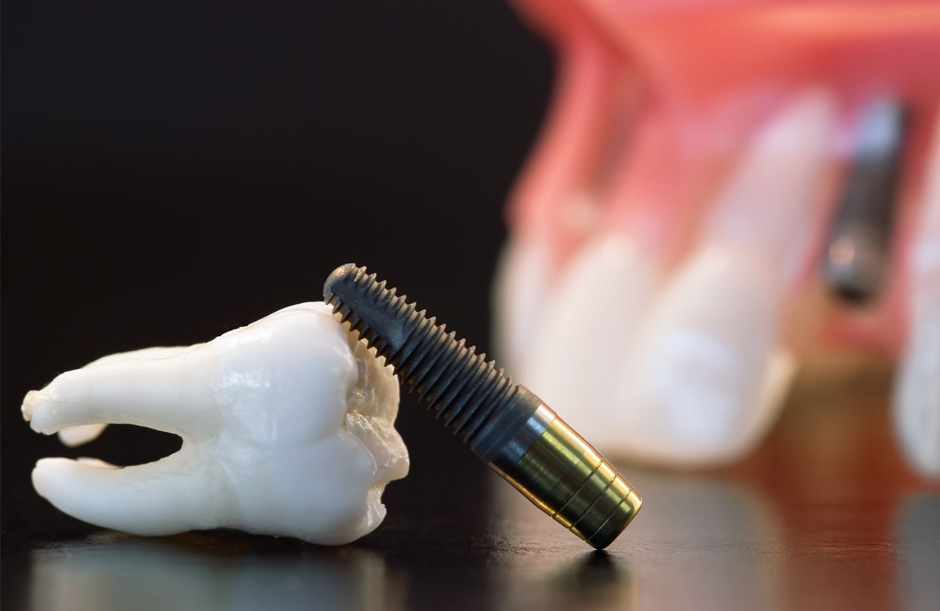

<!-- publication -->
<section id="blog">
  <div class="container mil-p-120-90">
      <div class="row justify-content-center">
          <div class="col-lg-12">

              <div class="mil-image-frame mil-horizontal mil-up">
                  
              </div>
              <div class="mil-info mil-up mil-mb-90">
                  <div>Date: &nbsp;<span class="mil-dark">Avril 2025</span></div>
              </div>

          </div>
          <div class="col-lg-8">

              <p class="mil-text-xl mil-dark mil-up mil-mb-60">Aujourd’hui, les soins dentaires évoluent rapidement : implants, facettes, bridges… Mais malgré toutes les technologies disponibles, aucune solution artificielle ne pourra jamais égaler la qualité, la solidité et la fonctionnalité d’une dent naturelle.
 Dans ce blog, on vous explique de façon simple pourquoi il est essentiel de garder ses vraies dents le plus longtemps possible, et comment y parvenir.

              </p>

              <blockquote class="mil-up mil-mb-60">Une dent naturelle = un organe vivant</blockquote>

              <!-- <h5 class="mil-up mil-mb-30">Understand the Field</h5> -->
              <p class="mil-up mil-mb-60">Une dent, ce n’est pas juste un "bout de matière blanche". C’est un organe vivant, composé :
d’émail (la couche dure extérieure),


de dentine (plus sensible),


et surtout d’une pulpe dentaire, riche en nerfs et en vaisseaux. <br> Elle ressent, elle s’adapte à la mastication, elle réagit aux agressions (chaud, froid, pression).
  Une dent artificielle (comme une couronne ou un implant) ne contient pas de nerf, donc elle ne ressent rien et ne s’adapte pas naturellement.</p>

              <h5 class="mil-up mil-mb-30">Les limites des solutions de remplacement</h5>
              <p class="mil-up mil-mb-60">Même si les progrès sont impressionnants, les prothèses restent des solutions de remplacement, pas des équivalents parfaits.
 <br><strong> 🔹L’implant dentaire</strong>
 <br>
Il remplace une racine perdue par une vis en titane dans l’os.

<br>
C’est la meilleure alternative en cas de perte, mais :

<br>
il nécessite une chirurgie,
<br>

le temps de cicatrisation est long,
<br>

il ne reproduit pas 100 % la fonction naturelle.
<br>
 <strong>🔹Les facettes</strong>
 <br>
Purement esthétiques, elles ne restaurent pas la fonction d’une dent abîmée.
<br>

En plus, pour les poser, il faut souvent tailler l’émail, donc on sacrifie une partie de la dent naturelle.
<br>

🔹 Les couronnes et bridges
<br>
Ils peuvent durer longtemps, mais ils ne possèdent pas de tissus vivants.
<br>

Si la gencive ou l’os autour se rétracte, la prothèse devient moins stable.


</p>

              <h5 class="mil-up mil-mb-30">Pourquoi préserver ses dents naturelles est toujours la priorité</h5>
              <p class="mil-up mil-mb-60"> Une <strong>mastication efficace</strong>
                <br>
 Une <strong>sensibilité naturelle</strong> (prévention des brûlures ou blessures)
 <br> Un <strong>alignement dentaire équilibré</strong> (une dent perdue = déséquilibre)
 <br>Une <strong>bonne santé osseuse</strong> (les racines stimulent l’os)
 <br> Moins de traitements invasifs à long terme</p>
 <blockquote class="mil-up mil-mb-60">
    Une dent sauvée, c’est un traitement évité.
              </blockquote>

              <h5 class="mil-up mil-mb-30"> Les gestes essentiels pour garder ses dents toute la vie</h5>
              <p class="mil-up mil-mb-60">La prévention est la seule vraie clé pour garder ses dents naturelles :
 <br>
               Brossage 2 fois par jour, avec une brosse souple

<br>
Fil dentaire ou brossettes interdentaires tous les soirs
<br>

 Alimentation équilibrée, faible en sucre
<br>

 Arrêt du tabac, qui favorise le déchaussement

<br>
 Consultation chez le dentiste tous les 6 mois

<br>
 Traiter les caries ou inflammations dès le début</p>

              

              <!-- <p class="mil-up mil-mb-60">Remember that creativity is at the core of graphic design. Embrace your creativity, experiment with different ideas, and think outside the box to create unique and impactful designs. Don't be afraid to take risks and push the boundaries of traditional design. Steve Jobs once said:</p> -->

              <blockquote class="mil-up mil-mb-60">
                <h5 class="mil-up mil-mb-30">Conclusion</h5>
Aujourd’hui, on peut remplacer une dent perdue. Mais même le plus bel implant ou la facette la plus esthétique ne valent pas une dent naturelle en bonne santé.
 La vraie solution, ce n’est pas de réparer après coup, mais de préserver ce qu’on a.
              </blockquote>
          </div>
      </div>
  </div>
</section>
<!-- publication end -->